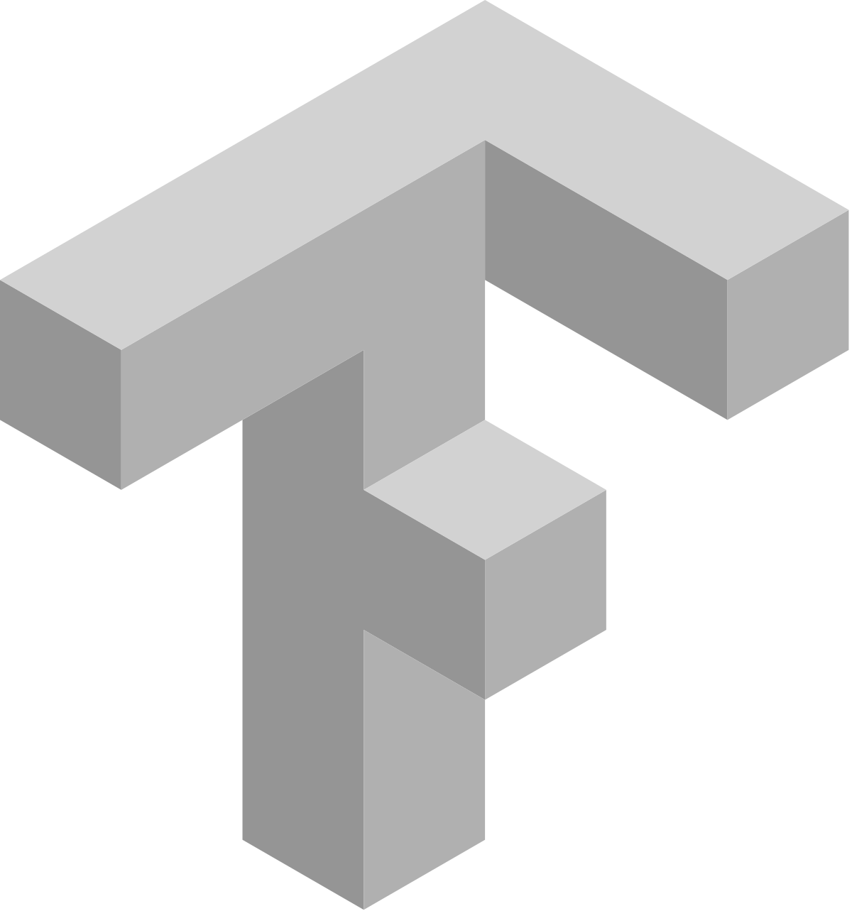
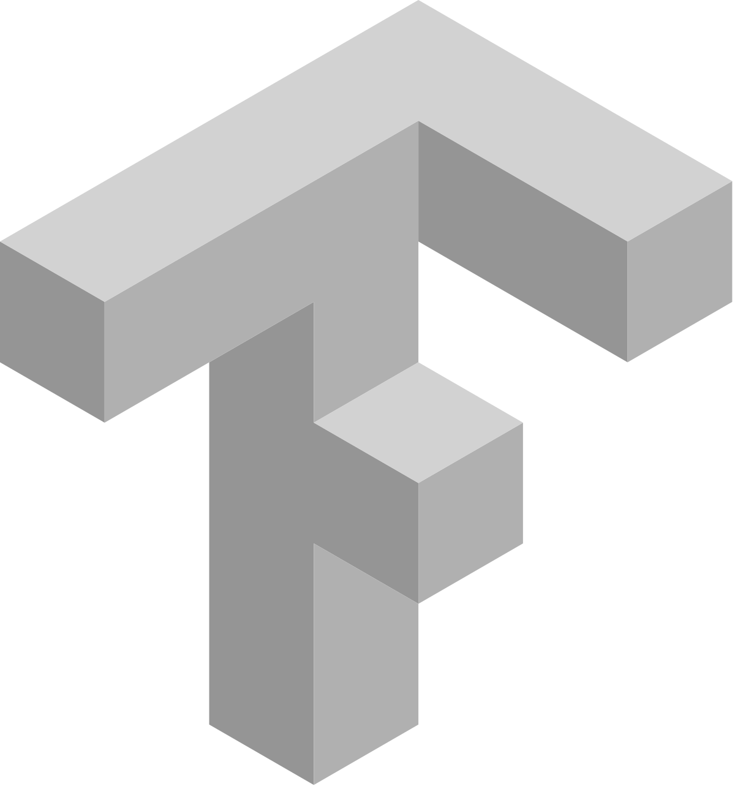

Tools
GOOD KNOWLEDGE
 

ADVANCED KNOWLEDGE
Portfolio
These are some of the projects I have made.
Conformal Predictions for Weather Image Classification
The aim of this project is to predict to which weather class a certain image belongs. We performed conformal predictions on the output of our models (Random Forest, Logistic Regression, SVM, CNN).
Bayesian hierarchical models for predicting football results
Statistical modelling of sports data is a popular topic. I applied two Bayesian hierarchical models to the 2021-2022 Italian Serie A data.
SMS Spam Classification
This project investigates how to find out the nature of a SMS message. We analyzed a Kaggle dataset and our goal was to classify SMS as spam or ham using the Naive Bayes model.
Analisi statistica della Raccolta Differenziata in Italia
This was my Bachelor's thesis. It studies the data on separate waste collection in Italy for 2019 provided by ISPRA at regional level.
Contact me!
-
Email
davcacciatore@gmail.com -
Social